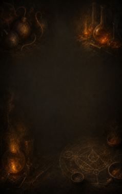
Home › Techniques › Crafting arts
Renkin Kyōka (Alchemy Enhancement)
17 techniques in the Ninjutsu tab.
Open to every ninja. How high a ninja can go depends on their ninja build.
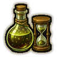
Renkin Enchō (Extend Alchemical Item) C
Passive. C-rank passive. Drinks and pills this alchemist makes last half again as long.
Renkin Enchō (Extend Alchemical Item) C
Passive. C-rank passive. Drinks and pills this alchemist makes last half again as long.
C-rank passive. Drinks and pills this alchemist makes last half again as long.
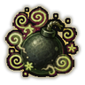
Renkin Hōkō Sōshitsu (Disorienting Alchemical Item) C
Passive. C-rank passive. Bombs this alchemist makes leave everyone in the blast dazed.
Renkin Hōkō Sōshitsu (Disorienting Alchemical Item) C
Passive. C-rank passive. Bombs this alchemist makes leave everyone in the blast dazed.
C-rank passive. Bombs this alchemist makes leave everyone in the blast dazed.
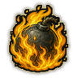
Renkin Kaishitsu (Modify Alchemical Qualities) C
Passive. C-rank passive. Bombs this alchemist makes also burn everyone in the blast.
Renkin Kaishitsu (Modify Alchemical Qualities) C
Passive. C-rank passive. Bombs this alchemist makes also burn everyone in the blast.
C-rank passive. Bombs this alchemist makes also burn everyone in the blast.
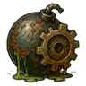
Renkin Gōremu Kusare (Golemrot Alchemical Item) C
Passive. C-rank passive. Bombs this alchemist makes deal 50% more damage to mechanoids and other machines.
Renkin Gōremu Kusare (Golemrot Alchemical Item) C
Passive. C-rank passive. Bombs this alchemist makes deal 50% more damage to mechanoids and other machines.
C-rank passive. Bombs this alchemist makes deal 50% more damage to mechanoids and other machines.
Kōryoku Zōkyō (Enhance Potency) B
Passive. B-rank passive. Everything this alchemist makes at the alchemy table is 10% stronger: bombs hit harder, drinks and pills last longer.
Kōryoku Zōkyō (Enhance Potency) B
Passive. B-rank passive. Everything this alchemist makes at the alchemy table is 10% stronger: bombs hit harder, drinks and pills last longer.
B-rank passive. Everything this alchemist makes at the alchemy table is 10% stronger: bombs hit harder, drinks and pills last longer.
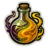
Kōryoku Henkō (Alter Potency) B
Passive. B-rank passive. Drinks and pills this alchemist makes last 15% longer.
Kōryoku Henkō (Alter Potency) B
Passive. B-rank passive. Drinks and pills this alchemist makes last 15% longer.
B-rank passive. Drinks and pills this alchemist makes last 15% longer.
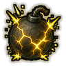
Renkin Kyōka (Empower Alchemical Item) B
Passive. B-rank passive. Bombs this alchemist makes deal 20% more damage.
Renkin Kyōka (Empower Alchemical Item) B
Passive. B-rank passive. Bombs this alchemist makes deal 20% more damage.
B-rank passive. Bombs this alchemist makes deal 20% more damage.
Renkin Kyōsei (Intensify Alchemical Item) B
Passive. B-rank passive. Drinks and pills this alchemist makes last 20% longer.
Renkin Kyōsei (Intensify Alchemical Item) B
Passive. B-rank passive. Drinks and pills this alchemist makes last 20% longer.
B-rank passive. Drinks and pills this alchemist makes last 20% longer.
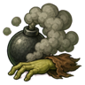
Renkin Datsuryoku (Enervating Alchemical Item) B
Passive. B-rank passive. Bombs this alchemist makes cripple and weaken everyone in the blast.
Renkin Datsuryoku (Enervating Alchemical Item) B
Passive. B-rank passive. Bombs this alchemist makes cripple and weaken everyone in the blast.
B-rank passive. Bombs this alchemist makes cripple and weaken everyone in the blast.
Renkin Genkaku (Hallucinogenic Alchemical Item) B
Passive. B-rank passive. Bombs this alchemist makes can send people in the blast wandering in confusion.
Renkin Genkaku (Hallucinogenic Alchemical Item) B
Passive. B-rank passive. Bombs this alchemist makes can send people in the blast wandering in confusion.
B-rank passive. Bombs this alchemist makes can send people in the blast wandering in confusion.
Renkin Kyokudai (Maximize Alchemical Item) A
Passive. A-rank passive. Everything this alchemist makes at the alchemy table is 25% stronger.
Renkin Kyokudai (Maximize Alchemical Item) A
Passive. A-rank passive. Everything this alchemist makes at the alchemy table is 25% stronger.
A-rank passive. Everything this alchemist makes at the alchemy table is 25% stronger.
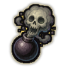
Mōdoku (Grim Potency) A
Passive. A-rank passive. Bombs this alchemist makes deal 25% more damage.
Mōdoku (Grim Potency) A
Passive. A-rank passive. Bombs this alchemist makes deal 25% more damage.
A-rank passive. Bombs this alchemist makes deal 25% more damage.
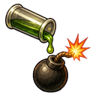
Shi no Shokubai (Deadly Catalyst) A
Passive. A-rank passive. Mad science: bombs this alchemist makes deal 15% more damage.
Shi no Shokubai (Deadly Catalyst) A
Passive. A-rank passive. Mad science: bombs this alchemist makes deal 15% more damage.
A-rank passive. Mad science: bombs this alchemist makes deal 15% more damage.
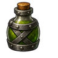
Renkin Taikyū (Durable Alchemical Items) A
Passive. A-rank passive. Drinks and pills this alchemist makes have a 20% chance not to be used up.
Renkin Taikyū (Durable Alchemical Items) A
Passive. A-rank passive. Drinks and pills this alchemist makes have a 20% chance not to be used up.
A-rank passive. Drinks and pills this alchemist makes have a 20% chance not to be used up.
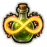
Eien no Hiyaku (Eternal Potion) S
Passive. S-rank passive. Drinks and pills this alchemist makes last three times as long.
Eien no Hiyaku (Eternal Potion) S
Passive. S-rank passive. Drinks and pills this alchemist makes last three times as long.
S-rank passive. Drinks and pills this alchemist makes last three times as long.
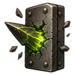
Renkin Kantsū (Penetrating Alchemical Item) S
Passive. S-rank passive. Bombs this alchemist makes ignore armour.
Renkin Kantsū (Penetrating Alchemical Item) S
Passive. S-rank passive. Bombs this alchemist makes ignore armour.
S-rank passive. Bombs this alchemist makes ignore armour.
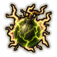
Renkin Dengeki (Shocking Alchemical Item) S
Passive. S-rank passive. Bombs this alchemist makes stun everyone in the blast.
Renkin Dengeki (Shocking Alchemical Item) S
Passive. S-rank passive. Bombs this alchemist makes stun everyone in the blast.
S-rank passive. Bombs this alchemist makes stun everyone in the blast.
Chakra is the technique's base cost, the number in its def. In play it is multiplied by the pawn's chakra energy usage multiplier, which traits (chakra artificer 90%, volatile conduit 110%), World of Naruto genes and jutsu enhancements change, so the technique window can show a slightly different number for each ninja. Cooldowns are in-game time, as the technique window shows them, and the pawn's cooldown stat shortens or lengthens them. World of Naruto gives every ninja a base of 100 maximum chakra; genes and traits change it.